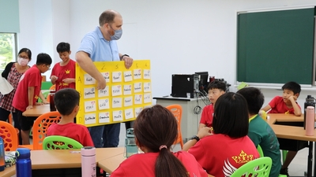
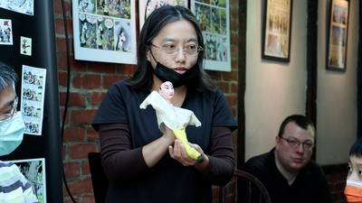
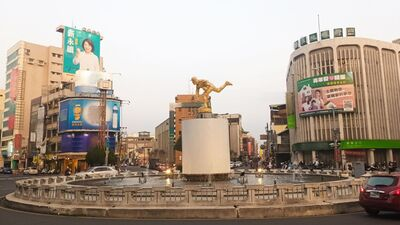
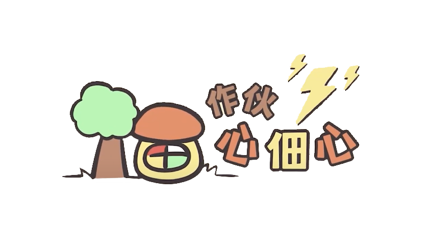
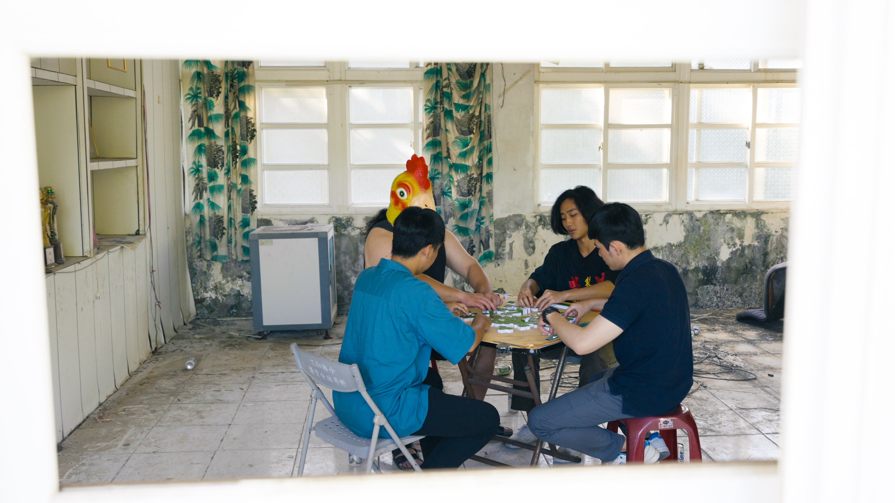
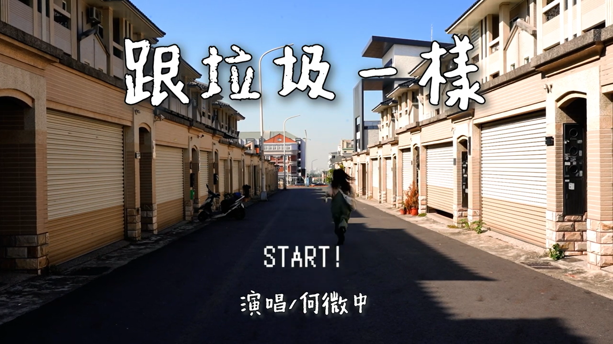
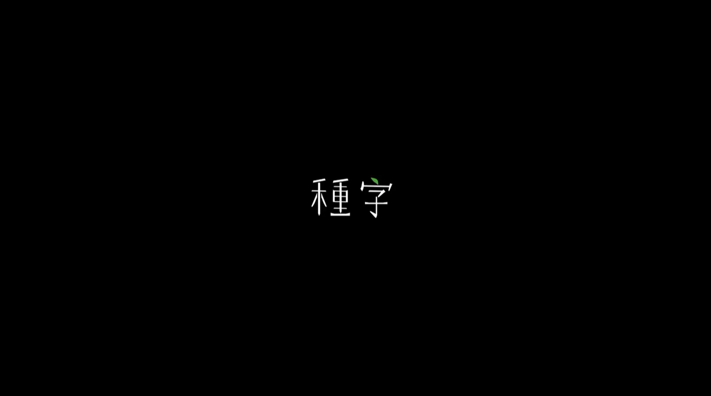

🏞️
2026
115基隆青年設計跨域交流整合規劃及執行製作服務案
服務建議書撰寫、簡報製作、計畫書撰寫、前期規劃、會議進行
專案管理簡報製作團隊協作
我畢業於中正大學傳播學系，傳播系培養了我的思辨及創作能力，並讓我在這段期間累積了新聞製作、活動規劃、影像製作、美術設計等實務
雖然不是那麼外向，但個性細心負責，朋友都說我很幽默！
國立中正大學・傳播學系
2021 – 2025
專案執行、新聞寫作、影像製作、美術設計
桔禾創意整合有限公司・專案企劃
2025/11 – 2026/4
標案計畫書撰寫、活動前期規劃、現場執行、成果報告撰寫等
生命樹時創美學有限公司・設計/企劃 實習生
2024/7 – 2024/8
平面設計、活動主視覺周邊文宣設計、企劃書撰寫、活動現場執行
彰化縣和美鎮南佃社區發展協會・行銷企劃 實習生
2023/7 – 2023/8
影片企劃執行（拍攝、剪輯）、活動執行、協助社區事務進行、文宣製作
服務建議書撰寫、簡報製作、計畫書撰寫、前期規劃、會議進行
從前期規劃到現場執行，成功與團隊舉辦一場企業與設計師的媒合交流會
暗中的微光使我們成長，這張雙CD專輯紀錄了迷惘、掙扎、成長和夢想...
透過電子音樂「Boiler Room」場景，藉由律動與舞曲讓因為社群媒體日漸疏遠的人們找回互相連結的感受...

臺灣「2030雙語政策」之下，嘉義市進行了一系列措施，除了引進外籍教師進入課堂外，也編撰屬於嘉義的教材，並建立雙語環境，讓孩子可以從小熟悉英語。然而，這樣的政策下仍有一些問題，如何解決困境並為孩子帶來完好的雙語教育，是嘉義市需面臨的課題。

在嘉義市的某個角落，有一位藝術家——蔡明璇，她結合歷史與光影戲劇，重新訴說台灣過去的故事，希望這些歷史記憶不會被世人所遺忘。除此之外，她在多年前改造了嘉義舊家，將其轉變為一個藝術空間，並時不時舉辦表演及工作坊，希望可以藉由這個空間推廣藝術。
隨著時代的變遷，戀愛風氣自由、婚禮流程簡化，因此職業媒人婆的角色已逐漸減少，但在嘉義朴子仍然有一位為許多人講親事的媒人婆——黃淑晴。除了以此為職業之外，看著自己協助的新人順利結親，那開心的心情也是促使她繼續做媒的原因。

嘉義市每逢大選，會在中央七彩噴水池舉辦選前之夜，不同的政黨候選人與其支持民眾會各據圓環一方、呼聲喝采，場面相當熱鬧。這樣的選前之夜充分地展現民主精神，且全臺獨有，是嘉義一直以來特有的民主文化，使得嘉義被稱為「民主聖地」。
死亡是每個人必經的過程，人們會藉由告別式向往生者進行哀悼，以此道別。大眾的印象中，告別式或許是莊嚴肅穆的，但值得注意的是，在臺灣中南部有一種特別的送行樂團，用正面的心態面對死亡，以活潑的音樂為往生者送行，希望往生者能夠快樂的離去。
完整 Brand Guideline，含 Logo、排版系統與色票。
72 頁出版品排版，資訊圖表插畫設計。
包含主視覺、文宣品及導覽手冊整套設計。
多尺寸跨平台模板，供編輯部日常使用。
20+ 張新聞資訊圖表，平均每篇分享數破千。
環境議題公益活動主視覺與周邊設計。

嘉義中埔山上的籐寮仔聚落居住著許多長輩，他們已和這片土地產生深厚的感情。然而，這個小村莊與市區的地理的差距，同時也成為了長輩與年輕親人之間的隔閡...


三位青年來到廢棄小學，他們未來會成為工程師、保險業務、失業青年，但此時的他們是三位即將畢業的大四生，同時也是個小劇組。 廢墟裡有蔣公、孫中山、一位從未到場的有為青年、一隻尚待完成的食人雞喪屍末日短片，一隻雞，一桌麻將。 教室裡牌局未完，工程師、保險業務、失業青年、一隻雞圍著牌桌，沒有人是贏家，所謂贏家早已離他們遠去。。


新傳獎為中正大學傳播系主辦的學生新聞頒獎典禮，我擔任第21屆新傳獎影視部長，與組員規劃與拍攝宣傳影片，以及活動當天之影像紀錄、直播操作。